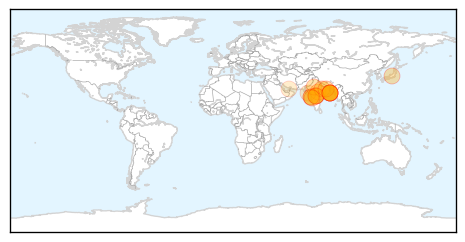
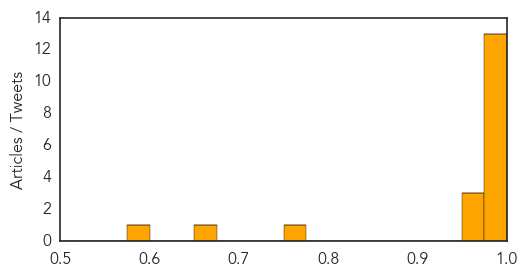

Swine Flu
30-Day Web Trend
6 alerts, 17 warnings

30-Day Twitter Trend
2 alerts, 0 warnings

Article Locations
Article Confidences
Top Articles:
- 1.000
- Swine flu in India: Death toll reaches 19 in Kolkata
- 0.998
- India's virology institute rejects MIT study claiming deadly swine flu mutation
- 0.998
- Over 1,700 dead in country due to swine flu
- 0.996
- Oman bans poultry from North India on Avian Influenza fear, but no travel ban despite surge in H1N1 cases
- 0.995
- Fresh circular on swine flu case
- 0.993
- 2nd swine flu case in city
- 0.990
- Two More Die Of Swine Flu In City
- 0.988
- Bengal swine flu death count now 20
- 0.988
- Bengal swine flu death count now 20
- 0.987
- Bengal swine flu death count now 20
- 0.986
- Bengal swine flu death count now 20
- 0.981
- Docs advise rest even after swine flu meds
- 0.981
- One more dies of suspected H1N1 at SMHS
- 0.969
- Minister allays swine flu fears
- 0.969
- Swine flu: No curbs on air passengers
- 0.960
- Swine flu claims 9 more lives in Raj, toll climbs to 375
- 0.771
- H1N1 tests raise concern
- 0.659
- Sonam Kapoor seeks check-up in Rajkot hospital
- 0.599
- Airlines fume as IGI doctors meant to scan patients for swine flu 'delay flights for up to six HOURS'
Top Tweets:
-
No tweets found for Mar 15, 2015
Measles
30-Day Web Trend
0 alerts, 0 warnings

30-Day Twitter Trend
3 alerts, 0 warnings

Article Locations

Article Confidences

Top Articles:
- 0.995
- Measles Outbreak to Hit USA, Canada & West Africa After Ebola Virus?
- 0.930
- Measles cases keep climbing
- 0.930
- Measles cases keep climbing
- 0.841
- Dana Hills High School
- 0.832
- A Shot at Explaining Vaccination
- 0.746
- 10 Top Facts About Measles Outbreaks Through the Years
- 0.590
- News for Denton County, Texas
- 0.528
- Pacific.scoop.co.nz UNICEF New Zealand launches Vanuatu emergency appeal
Top Tweets:
-
No tweets found for Mar 15, 2015